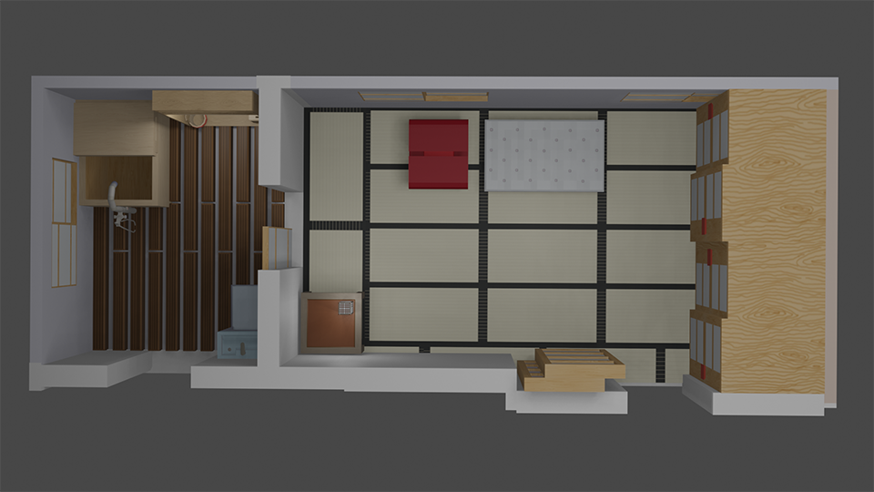
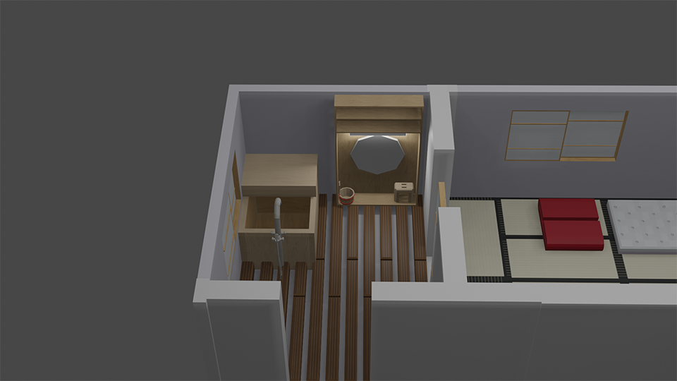

3D Grafiken
In Blender erstellt.
Schulprojekt. Stell dir vor, du bist ein Architekt. Gestalte deine Räume möglichst stimmig.
Meine Gruppe hat den Japanischen Stil, Mid-Poly gewählt. Hier zeige ich euch das gestaltete Bad und Schlafzimmer.
Die oberen Bilder sind die Blender Dateien und weiter unten sind Screenshots ingame.
Bei Interesse kann ich gerne andere Blickwinkel schicken. Dazu einfach Kontaktieren.
Eine Totale von oben, beide Räume
Das Schlafzimmer mit Blick auf die Fenster.
Das Schlafzimmer mit Blick auf den kleinen Tisch.
Das Badezimmer mit Blick auf die Wanne und den Schrank.
Das Schlafzimmer mit Blick auf die andere Seite.
Die Badewanne ingame.
Die Badewanne und der Schrank ingame.
Der Badezimmer Schrank ingame. Mit Spiegel, Licht, Hocker und Wascheimer (ingame).
Im Badezimmer das Waschbecken, welches mit dem WC kombiniert ist (ingame).
Das Wc im Badezimmer als gesamtansicht (ingame).
Die Badewanne (ingame).
Das Schlafzimmer mit Blickrichtung ins Bad (ingame).
Das Wc im Badezimmer als gesamtansicht (ingame).
* * * * *
Ich habe auch meinen Gruppenkollegen bei folgenden 3D Elementen geholfen:
Mein japanisches Fenster und eine Schiebetüre, die den Außenbereich vom Innenbereich trennt (ingame).
Die Schiebetüre, der Zaun auf dem Balkon und das Bäumchen (ingame).